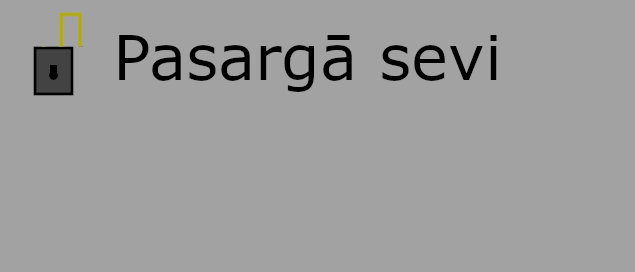

DIVPAKĀPJU VERIFIKĀCIJA
Divpakāpju verifikācija nodrošina papildus drošības slāni digitāliem īpašumiem - datoram, bankas kontam, e-pastam u.t.t., lietojot vēl vienu identitātes apliecināšanas metodi, atskaitot paroli.
Papildus metožu piemēri: apstiprinājums ar SMS kodu, pirkstu nospiedums, apstiprinājuma e-pasts.

Lietotais informācijas avots